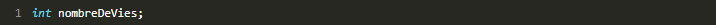
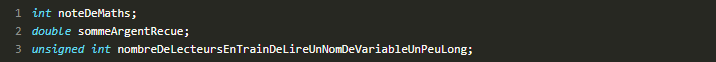
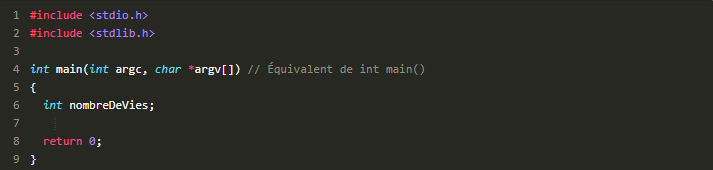

Chapitre 3 : Un monde de variables
-
Les différents types de mémoire
Pour vous donner une idée, voici les différents types de mémoire existant dans un ordinateur, de la plus rapide à la plus lente :
- les registres : une mémoire ultra-rapide située directement dans le processeur ;
- la mémoire cache : elle fait le lien entre les registres et la mémoire vive ;
- la mémoire vive : c'est la mémoire avec laquelle nous allons travailler le plus souvent ;
- le disque dur : que vous connaissez sûrement, c'est là qu'on enregistre les fichiers.
Comme je vous l'ai dit, j'ai classé les mémoires de la plus rapide (les registres) à la plus lente (le disque dur). Si vous avez bien suivi, vous avez compris aussi que la mémoire la plus rapide était la plus petite, et la plus lente la plus grosse.
Les registres sont donc à peine capables de retenir quelques nombres, tandis que le disque dur peut stocker de très gros fichiers.
Que faut-il retenir dans tout ça ?...En fait, je souhaite vous situer un peu. Vous savez désormais qu'en programmation, on va surtout travailler avec la mémoire vive. On verra aussi comment lire et écrire sur le disque dur, pour lire et créer des fichiers (mais on ne le fera que plus tard). Quant à la mémoire cache et aux registres, on n'y touchera pas du tout ! C'est votre ordinateur qui s'en occupe.
Il faut ajouter une dernière chose très importante : seul le disque dur retient tout le temps les informations qu'il contient. Toutes les autres mémoires (registres, mémoire cache, mémoire vive) sont des mémoires temporaires : lorsque vous éteignez votre ordinateur, ces mémoires se vident !
Heureusement, lorsque vous rallumerez l'ordinateur, votre disque dur sera toujours là pour rappeler à votre ordinateur qui il est.
-
Déclarer une variable
Croyez-moi, cette petite introduction sur la mémoire va nous être plus utile que vous ne le pensez.
Maintenant que vous savez ce qu'il faut, on peut retourner programmer.
Alors une variable, c'est quoi ?
Eh bien c'est une petite information temporaire qu'on stocke dans la RAM. Tout simplement.
On dit qu'elle est « variable » car c'est une valeur qui peut changer pendant le déroulement du programme. Par exemple, notre nombre 5 de tout à l'heure (le nombre de vies restant au joueur) risque de diminuer au fil du temps. Si ce nombre atteint 0, on saura que le joueur a perdu.
Nos programmes, vous allez le voir, sont remplis de variables. Vous allez en voir partout, à toutes les sauces.
En langage C, une variable est constituée de deux choses :
- une valeur : c'est le nombre qu'elle stocke, par exemple 5 ;
- un nom : c'est ce qui permet de la reconnaître. En programmant en C, on n'aura pas à retenir l'adresse mémoire (ouf !) : à la place, on va juste indiquer des noms de variables. C'est le compilateur qui fera la conversion entre le nom et l'adresse. Voilà déjà un souci de moins.
Donner un nom à ses variables
Enfin, et c'est très important à savoir, le langage C fait la différence entre les majuscules et les minuscules. Pour votre culture, sachez qu'on dit que c'est un langage qui « respecte la casse ».
Donc, du coup, les variableslargeur,LARGEURou encoreLArgEuRsont trois variables différentes en langage C, même si pour nous ça a l'air de signifier la même chose !
Voici quelques exemples de noms de variables corrects :nombreDeVies, prenom, nom, numero_de_telephone, numeroDeTelephone.
Les types de variables
Notre ordinateur, vous pourrez le constater, n'est en fait rien d'autre qu'une (très grosse) machine à calculer. Il ne sait traiter que des nombres.
Oui mais voilà, j'ai un scoop ! Il existe plusieurs types de nombres ! Par exemple, il y a les nombres entiers positifs :
- 45 ;
- 398 ;
- 7650.
Mais il y a aussi des nombres décimaux, c'est-à-dire des nombres à virgule :
- 75,909 ;
- 1,7741 ;
- 9810,7.
En plus de ça, il y a aussi des nombres entiers négatifs :
- -87 ;
- -916.
… Et des nombres négatifs décimaux !
- -76,9 ;
- -100,11.
Votre pauvre ordinateur a besoin d'aide ! Lorsque vous lui demandez de stocker un nombre, vous devez dire de quel type il est. Ce n'est pas vraiment qu'il ne soit pas capable de le reconnaître tout seul, mais… ça l'aide beaucoup à s'organiser, et à faire en sorte de ne pas prendre trop de mémoire pour rien.
Lorsque vous créez une variable, vous allez donc devoir indiquer son type.
Voici les principaux types de variables existant en langage C :
Tableau 1. Types variables Nom du type Minimum Maximum signed char -127 127 int -32 767 32 767 long -2 147 483 647 2 147 483 647 float -1 x1037 1 x1037 double -1 x1037 1 x1037 Les trois premiers types (signed char,int,long) permettent de stocker des nombres entiers : 1, 2, 3, 4…
Les deux derniers (float,double) permettent de stocker des nombres décimaux (appelés nombres flottants) : 13.8, 16.911…
Vous verrez que la plupart du temps on manipule des nombres entiers (tant mieux, parce que c'est plus facile à utiliser).
Ce n'est pas tout ! Pour les types entiers ( signed char,int,long…), il existe d'autres types ditsunsigned(non signés) qui eux ne peuvent stocker que des nombres positifs. Pour les utiliser, il suffit d'écrire le motunsigneddevant le type :
Tableau 2. Types variables unsigned unsigned char 0 à 255 unsigned int 0 à 65 535 unsigned long 0 à 4 294 967 295 Comme vous le voyez, lesunsignedsont des types qui ont le défaut de ne pas pouvoir stocker de nombres négatifs, mais l'avantage de pouvoir stocker des nombres deux fois plus grands (signed char s'arrête à 127, tandis que unsigned char s'arrête à 255 par exemple).
Oui, mais on a créé à l'origine plusieurs types pour économiser de la mémoire. Ainsi, quand on dit à l'ordinateur qu'on a besoin d'une variable de type char, on prend moins d'espace en mémoire que si on avait demandé une variable de type int.
Toutefois, c'était utile surtout à l'époque où la mémoire était limitée. Aujourd'hui, nos ordinateurs ont largement assez de mémoire vive pour que ça ne soit plus vraiment un problème. Il ne sera donc pas utile de se prendre la tête pendant des heures sur le choix d'un type. Si vous ne savez pas si votre variable risque de prendre une grosse valeur, mettez int(ou double pour un flottant).
En résumé, on fera surtout la distinction entre nombres entiers et flottants :
- pour un nombre entier, on utilisera le plus souvent int;
- pour un nombre flottant, on utilisera généralement double.
Declarer une variable
On y arrive. Maintenant, créez un nouveau projet console que vous appellerez « variables ».
On va voir comment déclarer une variable, c'est-à-dire demander à l'ordinateur la permission d'utiliser un peu de mémoire.
Une déclaration de variable, c'est très simple maintenant que vous savez tout ce qu'il faut. Il suffit dans l'ordre :
- d'indiquer le type de la variable que l'on veut créer ;
- d'insérer un espace ;
- d'indiquer le nom que vous voulez donner à la variable ;
- et enfin, de ne pas oublier le point-virgule.
Par exemple, si je veux créer ma variable nombreDeVies de type int , je dois taper la ligne suivante :
Et c'est tout ! Quelques autres exemples stupides pour la forme :
Bon bref, vous avez compris le principe je pense !
Ce qu'on fait là s'appelle une déclaration de variable (un vocabulaire à retenir). Vous devez faire les déclarations de variables au début des fonctions. Comme pour le moment on n'a qu'une seule fonction (la fonctionmain), vous allez déclarer la variable comme ceci :
Si vous lancez le programme ci-dessus, vous constaterez avec stupeur… qu'il ne fait rien.
Quelque explications
Alors, avant que vous ne m'étrangliez en croyant que je vous mène en bateau depuis tout à l'heure, laissez-moi juste dire une chose pour ma défense.
En fait, il se passe des choses, mais vous ne les voyez pas. Lorsque le programme arrive à la ligne de la déclaration de variable, il demande bien gentiment à l'ordinateur s'il peut utiliser un peu d'espace dans la mémoire vive.
Si tout va bien, l'ordinateur répond « Oui bien sûr, fais comme chez toi ». Généralement, cela se passe sans problème. Le seul souci qu'il pourrait y avoir, c'est qu'il n'y ait plus de place en mémoire… Mais heureusement cela arrive rarement, car pour remplir toute la mémoire rien qu'avec desintil faut vraiment le vouloir !
Soyez donc sans crainte, vos variables devraient normalement être créées sans souci.